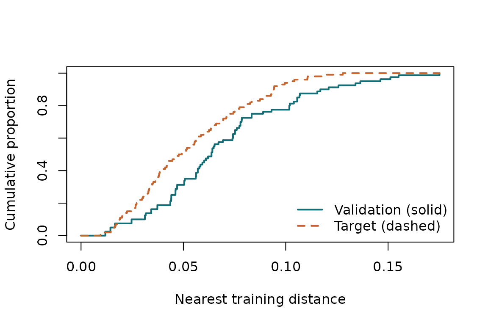

Spatial CV should estimate prediction error for a particular task. Start by specifying the locations at which you will make predictions and the observations that will be available to fit the final model.
This tutorial uses simulated locations. No responses are needed to compare distances. A specified or estimated covariance adds correlation diagnostics.
Define the prediction target
set.seed(42)
training <- matrix(runif(160), ncol = 2)
target_xy <- as.matrix(expand.grid(
x = seq(0.05, 0.95, length.out = 10),
y = seq(0.05, 0.95, length.out = 10)
))
target <- prediction_target(target_xy, label = "Grid inside the sampled region")
target
#> Grid inside the sampled region
#> 100 locations; equal weightsEach target location has equal weight here. Use weights
for a target whose locations have different importance. Weights describe
the prediction task; they should not be chosen after looking at which
predictions have small errors.
Numeric coordinates must share the same projected system and units.
For real geographic data, transform both sets of points to the same
appropriate projected CRS with sf::st_transform().
Longitude and latitude in degrees should not be passed as numeric
Euclidean coordinates.
Construct a complete CV partition
folds <- spatial_folds(training, k = 5, method = "random", seed = 12)
vapply(folds, function(f) length(f$test), integer(1))
#> [1] 16 16 16 16 16Every observation is held out once. Each fold supplies explicit
train and test indices. You can instead import
a partition from your modelling workflow:
cv_folds() rejects missing test observations,
overlapping training and test indices, duplicates, and empty training
sets. Buffered folds may leave additional observations out of a training
set.
Compare nearest-training distances
audit <- audit_cv(training, folds, target)
audit
#> Spatial CV audit
#> A W J1 J2 U1 U2
#> -0.01568732 0.01578783 NA NA NA NA
#> Diagnostics compare prediction conditions; they do not certify CV accuracy.
plot(audit)
The solid curve describes the validation observations: each distance is to the closest observation in that fold’s training set. The dashed curve describes the target, using the complete training set. A curve further left represents shorter nearest-training distances.
W measures the overall difference between the curves.
A is mean target distance minus mean validation distance.
Positive A means validation observations are closer to
their available training observations, on average.
Add spatial correlation
covariance <- spatial_covariance(range = 0.2, signal = 0.8)
audit <- audit_cv(training, folds, target, covariance)
audit$diagnostics[c("W", "J1", "J2", "U1", "U2")]
#> W J1 J2 U1 U2
#> 0.01578783 -0.04347391 -0.04958680 0.04384698 0.05014076The exponential scale is 0.2 coordinate units. The spatial signal fraction is 0.8; the other 0.2 of total variance is independent observation noise. The correlation between distinct responses a distance apart is .
J2 is average squared nearest-observation correlation
during validation minus the corresponding target average. A positive
value means higher average squared correlation during validation. Under
the paper’s one-neighbour Gaussian model, this indicates that CV
underestimates target MSE on average. For a different prediction model,
it describes a correlation mismatch, without establishing the direction
or size of its CV bias.
U2 measures the discrepancy without cancellation. If
abs(J2) is small but U2 is appreciably larger,
positive and negative differences cancel in J2.
Compare alternative schemes
schemes <- list(
random = folds,
block = spatial_folds(training, 5, "block", seed = 12)
)
compare_cv_schemes(training, schemes, target, covariance, criterion = "J2")
#> CV comparison by |J2|
#> scheme W J2 criterion_value selection_probability
#> random 0.01578783 -0.0495868 0.0495868 1
#> block 0.16292814 -0.2826897 0.2826897 0The result reports the probability assigned to each selected
candidate. It chooses the smallest abs(J2) and gives tied
candidates equal probabilities. Choosing criterion = "W"
instead selects the closest nearest-distance match. The selected CV
scheme supplies an estimate of target MSE; it does not change the final
prediction model fitted to all training observations.
Continue with
vignette("choosing-cv", package = "spCVAudit") for weighted
targets, buffered folds and tie handling, or
vignette("theory-and-limits", package = "spCVAudit") for
the exact Gaussian results.